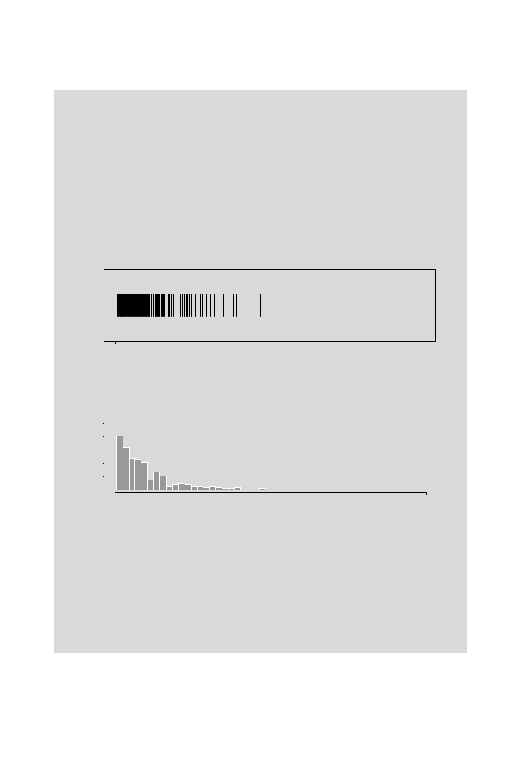

88
3 Word Distributions and Occurrences
> max(alu.frag[])
[1] 1475
> min(alu.frag[])
[1] 5
The four lines above display the largest and smallest fragments.
> length(alu.frag[])
[1] 185
> sum(alu.frag[])3.2
[1] 48500
Fragment Size
0
500
1000
1500
2000
2500
A.
0
500
1000
1500
2000
2500
Fragment Size
B.
10
20
30
40
50
0
Fig. 3.4.
Fragments predicted for an
Alu
I digestion of simulated DNA. Panel A:
Lengths of individual fragments. Panel B: Histogram of fragment sizes.
The first two lines verify that the number of fragments is what it should be.
(
n
sites in a linear molecule generate
n
+ 1 fragments.) The second two lines
show that the fragment sizes sum to the length of the molecule. These results
are expected if the function does what it should do. The data in
alu.frag
are plotted in Fig. 3.4, as was done in Fig. 3.3.
The particular simulated sequence that we generated yields a distribution
of restriction fragment lengths that looks similar to the distribution observed
for bacteriophage lambda DNA fragments (Fig. 3.3). However, note the dif-
ferent scales for the ordinates in the lower panels for the two figures and the